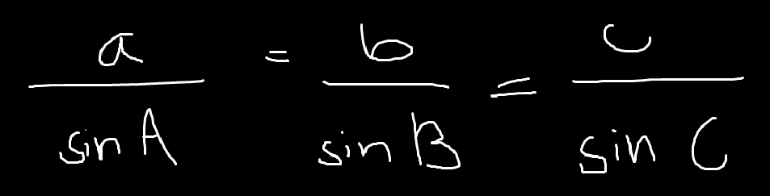
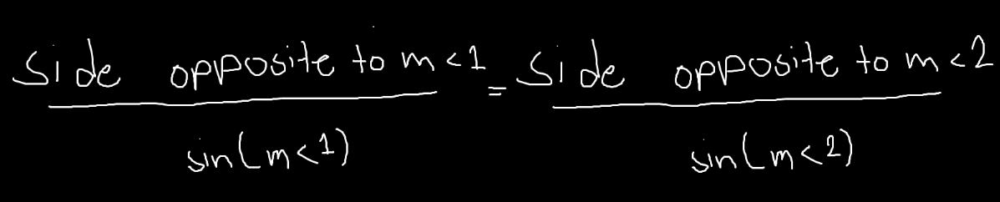
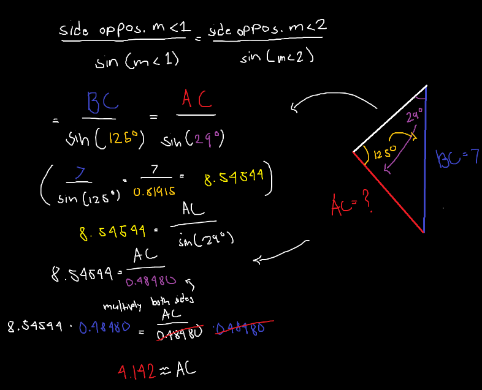
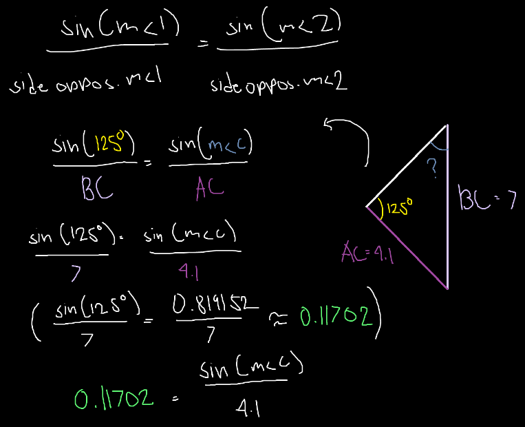
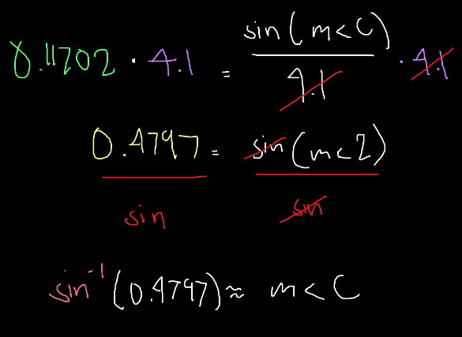
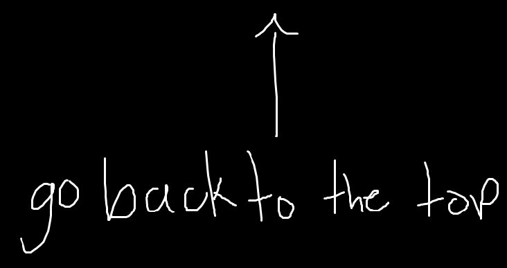

Law of Sines - Geometry & Trigonometry

These also basically just help solve for sides (or angles) of a triangle. I think that the law of cosine or formula of sine states that:

Check this video out for more info.
Lets say that our triangle (Courtesy of Khan Academy) is:

Find side AC
For some reason, we only use a part of the formula, but its maybe because we are only finding one side of the triangle, as opposed to finding two.
So, the equation should be:

With
M<1 = Measurement of angle A
M<2 = Measurement of angle B
Therefore:

Thus:
AC ≈ 4.142
The sine thing is still difficult, but you could understand its basic parts.
(Btw, you cant calculate sin by hand, its really hard to do, you would need a scientific calculator)
But what if it's the angle we're trying to find?
Maybe this will help, but this will have a different formula than what i'm gonna show you.
So lets use the same triangle, but this time, one of the angles is missing.

Find the measurement of angle B
Since we are finding angles, sin is supposed to be the numerator, therefore:

Multiply both sides in order to cancel out the denominator:

Therefore the measurement of angle C ≈ sin-1(0.4797)
or ≈ 29
Not quite sure how the sin-1 works, but it may correlate with my theory in the cosines tab
So yea, i'll be updating this onces in a while.
